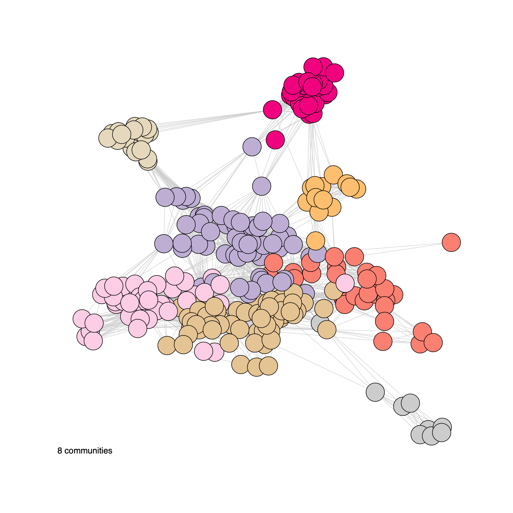
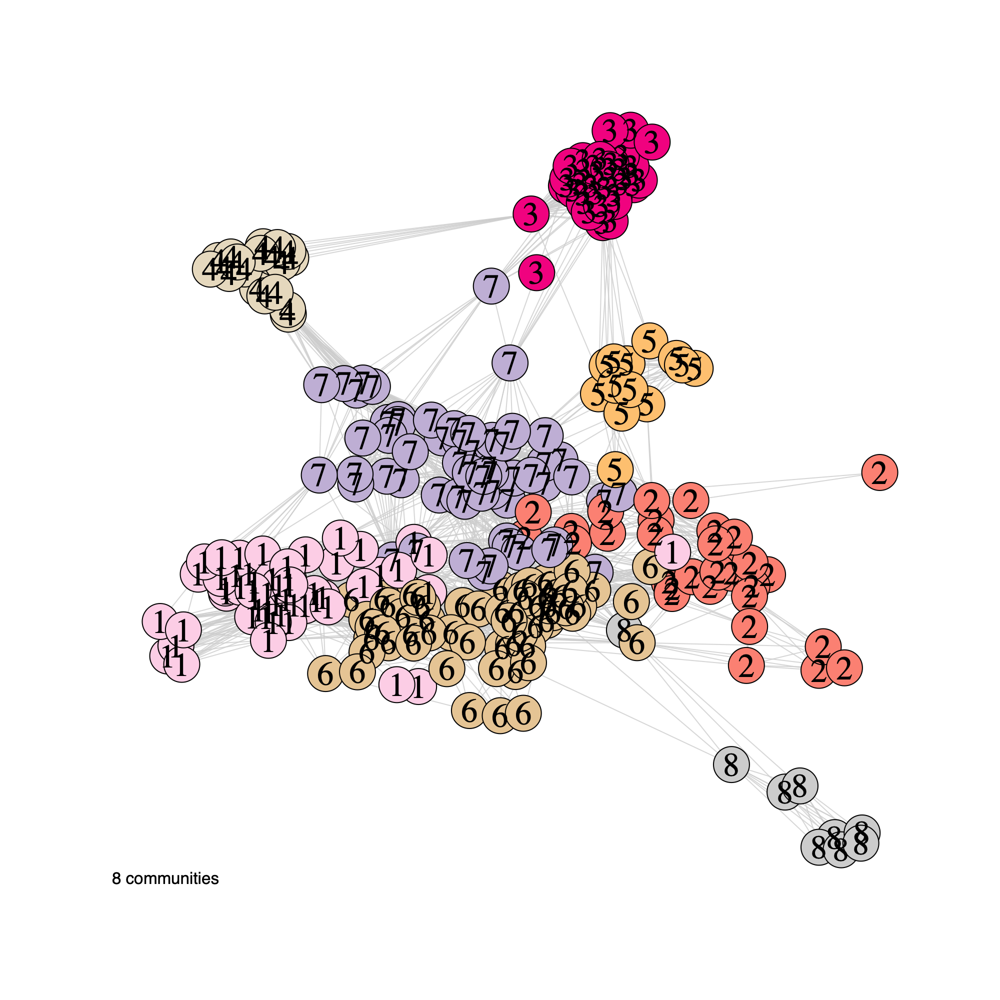
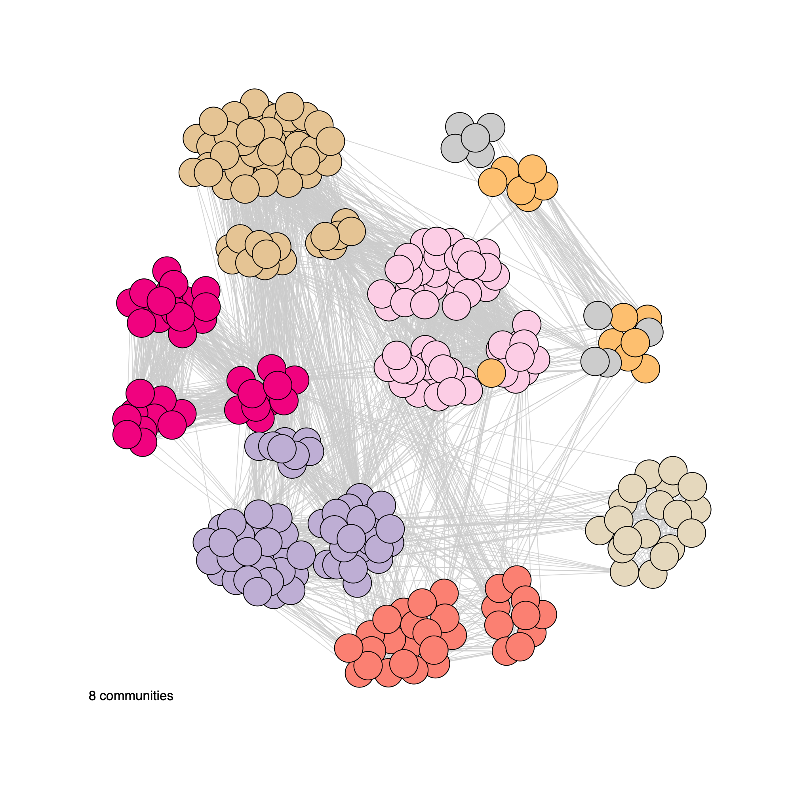
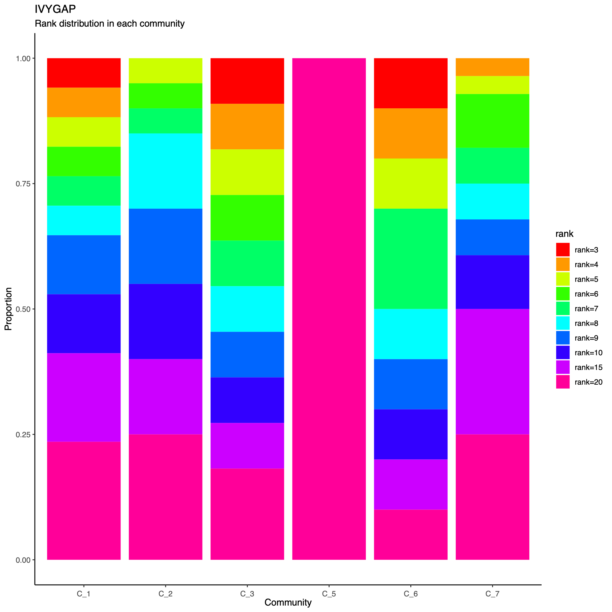
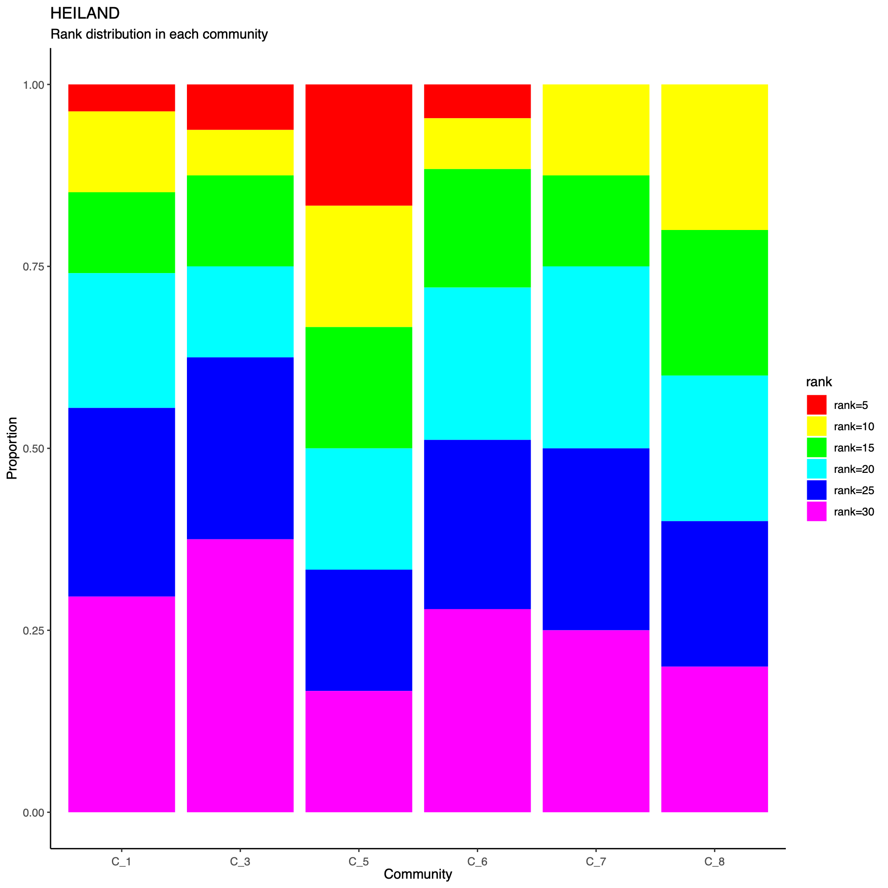
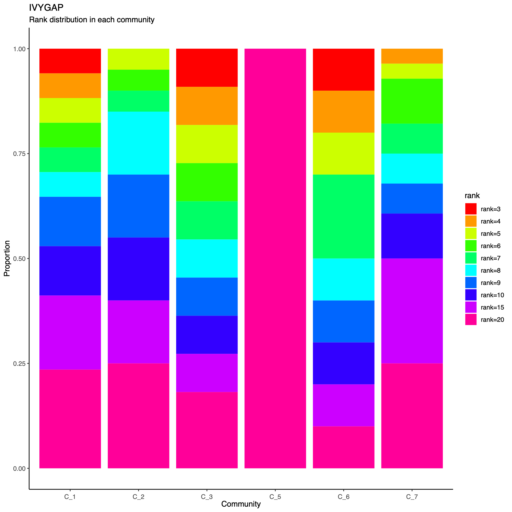
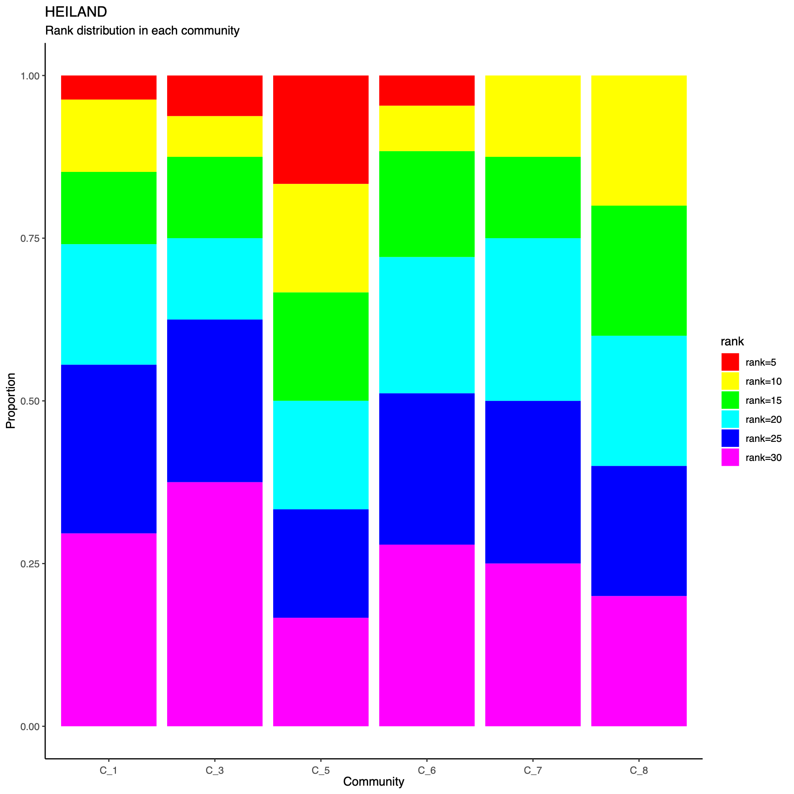

Introduction
- This demo script demonstrates how to visualize the Spatial Omics Set
(
soSet) to facilitate interpretation of the derived metagene structure and cross-cohort relationships. - Each figure generated below is accompanied by a detailed explanation describing its rationale, key features, and guidance for interpretation.
Directory settings
- This block defines the working directory used throughout the demo to store downloaded inputs and generated outputs.
# If you want to use a user-defined output directory,
# uncomment and set the download_dir parameter.
# download_dir <- "/path/to/download" # where soObj.RDS is located
if (exists("download_dir") && is.character(download_dir) && length(download_dir) == 1 &&
nzchar(download_dir)) {
download_dir <- download_dir
} else {
download_dir <- tools::R_user_dir("sotk2", "data")
}
Load the spatial omics object
- We load the previously generated
soObjobject, which contains the correlation network and community detection results produced in the earlier steps of the workflow. - The script first attaches the
sotk2package and then checks whethersoObj.RDSis present indownload_dir.
library(sotk2)
if (file.exists(file.path(download_dir, "soObj.RDS"))) {
soObj <- readRDS(file.path(download_dir, "soObj.RDS"))
} else {
stop("ERROR: the soObj.RDS file not found.")
}
Correlation coefficient density
- This panel summarizes the distribution of pairwise correlation coefficients within and between datasets using a matrix-style layout.
- For three datasets, the figure comprises six histograms corresponding
to all dataset pairs.
- The diagonal panels display within-dataset correlation distributions.
- The lower-left panels show between-dataset correlation distributions for each dataset pair, whereas the upper-right panels provide the corresponding overall coefficient distributions as a reference for comparison.
- The
filenameargument controls output: settingfilename = NULLprints to the active graphics device, whereas providing a path writes the figure to disk.
plotCorrDensity(soObj@SOSet, filename = NULL)

Visualization parameters
- This section defines core visualization parameters that control the appearance and readability of the network plots.
- Specifically,
nodeSizeandnodeLabelSizedetermine the size of nodes and the corresponding label text, respectively, whileedgeAlphasets the transparency of edges to reduce visual clutter in dense networks and to emphasize higher-level structure.
nodeSize <- 10
nodeLabelSize <- 2
edgeAlpha <- 0.8
Correlation-network plots
- In this section, we generate network visualizations derived from the
correlation graph stored in
soObj. - The plotting function supports flexible display options, allowing users to
- Toggle vertex labels (
label = TRUE/FALSE) - Color or annotate nodes by cohort membership (
annot = "cohort") or by inferred community assignment (annot = "community") - Render either an unweighted network (
weighted = FALSE) or a weighted network (weighted = TRUE, where edge widths reflect correlation strength)
plotNetwork(soObj, label = FALSE, annot = "cohort", weighted = FALSE, edgeAlpha = edgeAlpha, filename = NULL, vertexSize = nodeSize, vertexLabelCex = nodeLabelSize)

plotNetwork(soObj, label = TRUE, annot = "cohort", weighted = FALSE, edgeAlpha = edgeAlpha, filename = NULL, vertexSize = nodeSize, vertexLabelCex = nodeLabelSize)

plotNetwork(soObj, label = FALSE, annot = "community", weighted = FALSE, edgeAlpha = edgeAlpha, filename = NULL, vertexSize = nodeSize, vertexLabelCex = nodeLabelSize)

plotNetwork(soObj, label = TRUE, annot = "community", weighted = FALSE, edgeAlpha = edgeAlpha, filename = NULL, vertexSize = nodeSize, vertexLabelCex = nodeLabelSize)

plotNetwork(soObj, label = FALSE, annot = "community", weighted = TRUE, edgeAlpha = edgeAlpha, filename = NULL, vertexSize = nodeSize, vertexLabelCex = nodeLabelSize)

plotNetwork(soObj, label = TRUE, annot = "community", weighted = TRUE, edgeAlpha = edgeAlpha, filename = NULL, vertexSize = nodeSize, vertexLabelCex = nodeLabelSize)

plotNetwork(soObj, label = FALSE, annot = "cohort", weighted = TRUE, edgeAlpha = edgeAlpha, filename = NULL, vertexSize = nodeSize, vertexLabelCex = nodeLabelSize)

plotNetwork(soObj, label = TRUE, annot = "cohort", weighted = TRUE, edgeAlpha = edgeAlpha, filename = NULL, vertexSize = nodeSize, vertexLabelCex = nodeLabelSize)

Community network properties
- The following plot summarizes community composition by reporting the
number of metagenes assigned to each detected community, stratified by
dataset.
- This visualization provides a compact overview of how communities are supported across cohorts and highlights communities that are cohort-specific versus broadly shared.
- Metagenes derived from higher-rank factorizations often capture increasingly sample-specific patterns rather than broadly conserved biological programs. Consequently, communities dominated by high-rank metagenes may reflect cohort- or sample-idiosyncratic structure and may be less likely to represent generalizable biological signals that are reproducibly observed across datasets.
statComm(soObj, filename = NULL)
 



Community-level network layout
- This step generates a community-level network in which each node represents a detected community.
- Node size reflects the number of metagenes (GEPs) assigned to the community, and edge thickness summarizes the extent of connectivity between communities (that is, the number of inter-community edges in the underlying metagene network).
- In subsequent sections, this community-level layout will be augmented with sample-level annotations to support biological interpretation of the inferred modules.
plotCommNetwork(soObj, vertexInfo = NULL, filename = NULL)